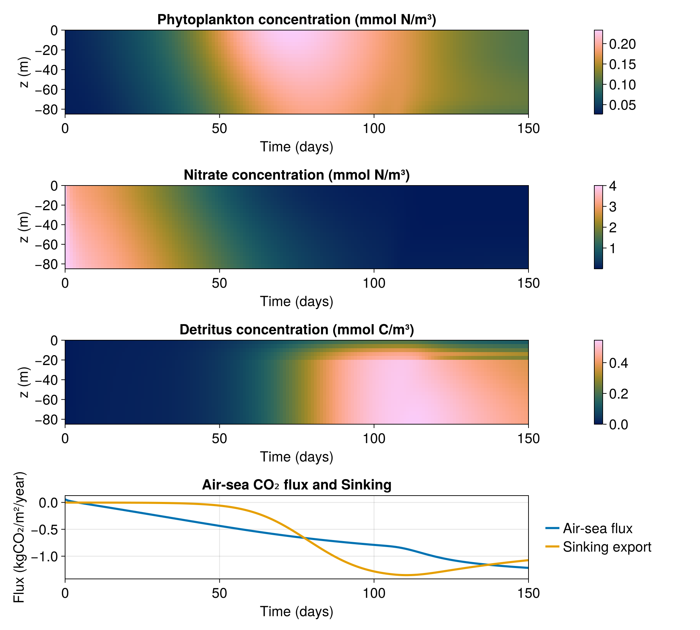
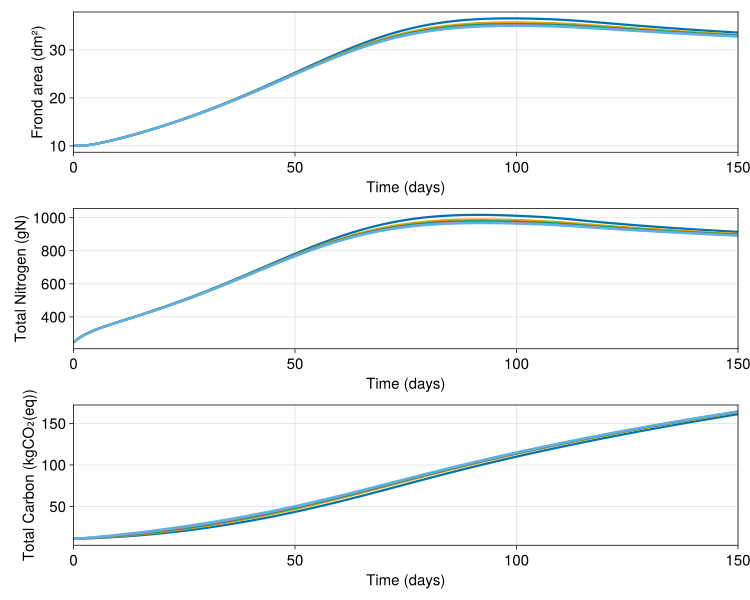

Simple active particle example
Here, we setup a simple 1D column example with the LOBSTER biogeochemical model and active particles modelling the growth of sugar kelp. This example demonstrates:
- How to setup OceanBioME's biogeochemical models
- How to add biologically active particles which interact with the biodeochemical model
- How to visualise results
This is forced by idealised mixing layer depth and surface photosynthetically available radiation (PAR) which are setup first.
Install dependencies
First we check we have the dependencies installed
using Pkg
pkg "add OceanBioME, Oceananigans, CairoMakie, JLD2"Model setup
First load the required packages
using OceanBioME, Oceananigans, Printf
using Oceananigans.Fields: FunctionField, ConstantField
using Oceananigans.Units
using Oceananigans.Architectures: on_architecture
const year = years = 365days # just for these idealised casesSurface PAR and turbulent vertical diffusivity based on idealised mixed layer depth
Setting up idealised functions for PAR and diffusivity (details here can be ignored but these are typical of the North Atlantic).
@inline PAR⁰(x, y, t) = 60 * (1 - cos((t + 15days) * 2π / year)) * (1 / (1 + 0.2 * exp(-((mod(t, year) - 200days) / 50days)^2))) + 2
@inline H(t, t₀, t₁) = ifelse(t₀ < t < t₁, 1.0, 0.0)
@inline fmld1(t) = H(t, 50days, year) * (1 / (1 + exp(-(t - 100days) / 5days))) * (1 / (1 + exp((t - 330days) / 25days)))
@inline MLD(t) = - (10 + 340 * (1 - fmld1(year - eps(year)) * exp(-mod(t, year) / 25days) - fmld1(mod(t, year))))
@inline κₜ(x, y, z, t) = 1e-2 * (1 + tanh((z - MLD(t))/10)) / 2 + 1e-4
@inline temp(x, y, z, t) = 2.4 * cos(t * 2π / year + 50day) + 10
architecture = CPU()Oceananigans.Architectures.CPU()Grid and PAR field
Define the grid and an extra Oceananigans' field that the PAR will be stored in
Lx, Ly = 20meters, 20meters
grid = RectilinearGrid(architecture, size=(1, 1, 50), extent=(Lx, Ly, 200))1×1×50 RectilinearGrid{Float64, Oceananigans.Grids.Periodic, Oceananigans.Grids.Periodic, Oceananigans.Grids.Bounded} on Oceananigans.Architectures.CPU with 1×1×3 halo
├── Periodic x ∈ [0.0, 20.0) regularly spaced with Δx=20.0
├── Periodic y ∈ [0.0, 20.0) regularly spaced with Δy=20.0
└── Bounded z ∈ [-200.0, 0.0] regularly spaced with Δz=4.0Specify the boundary conditions for DIC and O₂ based on the air-sea CO₂ and O₂ flux
CO₂_flux = CarbonDioxideGasExchangeBoundaryCondition()
clock = Clock(; time = 0.0)
T = FunctionField{Center, Center, Center}(temp, grid; clock)
S = ConstantField(35)ConstantField(35)Kelp Particle setup
@info "Setting up kelp particles"
n = 5 # number of kelp bundles
z₀ = [-21:5:-1;] * 1.0 # depth of kelp fronds
particles = SugarKelpParticles(n; grid,
advection = nothing, # we don't want them to move around
scalefactors = fill(2000, n)) # and we want them to look like there are 500 in each bundle
set!(particles, A = 10, N = 0.01, C = 0.1, z = z₀, x = Lx / 2, y = Ly / 2)[ Info: Setting up kelp particles
Setup BGC model
biogeochemistry = LOBSTER(; grid,
surface_photosynthetically_active_radiation = PAR⁰,
carbonates = true,
variable_redfield = true,
oxygen = true,
scale_negatives = true,
particles)
model = NonhydrostaticModel(; grid,
clock,
closure = ScalarDiffusivity(ν = κₜ, κ = κₜ),
biogeochemistry,
auxiliary_fields = (; T, S))
set!(model, P = 0.03, Z = 0.03, NO₃ = 4.0, NH₄ = 0.05, DIC = 2239.8, Alk = 2409.0)Simulation
Next we setup the simulation along with some callbacks that:
- Show the progress of the simulation
- Store the model and particles output
- Prevent the tracers from going negative from numerical error (see discussion of this in the positivity preservation implementation page)
simulation = Simulation(model, Δt = 4minutes, stop_time = 150days)
progress_message(sim) = @printf("Iteration: %04d, time: %s, Δt: %s, wall time: %s\n",
iteration(sim),
prettytime(sim),
prettytime(sim.Δt),
prettytime(sim.run_wall_time))
simulation.callbacks[:progress] = Callback(progress_message, TimeInterval(10days))
filename = "kelp"
simulation.output_writers[:profiles] = JLD2OutputWriter(model, model.tracers,
filename = "$filename.jld2",
schedule = TimeInterval(1day),
overwrite_existing = true)
simulation.output_writers[:particles] = JLD2OutputWriter(model, (; particles),
filename = "$(filename)_particles.jld2",
schedule = TimeInterval(1day),
overwrite_existing = true)
Run!
Finally we run the simulation
run!(simulation)[ Info: Initializing simulation...
Iteration: 0000, time: 0 seconds, Δt: 4 minutes, wall time: 0 seconds
[ Info: ... simulation initialization complete (1.975 seconds)
[ Info: Executing initial time step...
[ Info: ... initial time step complete (11.704 seconds).
Iteration: 3600, time: 10 days, Δt: 4 minutes, wall time: 21.351 seconds
Iteration: 7200, time: 20 days, Δt: 4 minutes, wall time: 28.891 seconds
Iteration: 10800, time: 30 days, Δt: 4 minutes, wall time: 36.424 seconds
Iteration: 14400, time: 40 days, Δt: 4 minutes, wall time: 43.950 seconds
Iteration: 18000, time: 50 days, Δt: 4 minutes, wall time: 51.473 seconds
Iteration: 21600, time: 60 days, Δt: 4 minutes, wall time: 58.988 seconds
Iteration: 25200, time: 70 days, Δt: 4 minutes, wall time: 1.108 minutes
Iteration: 28800, time: 80 days, Δt: 4 minutes, wall time: 1.234 minutes
Iteration: 32400, time: 90 days, Δt: 4 minutes, wall time: 1.359 minutes
Iteration: 36000, time: 100 days, Δt: 4 minutes, wall time: 1.486 minutes
Iteration: 39600, time: 110 days, Δt: 4 minutes, wall time: 1.613 minutes
Iteration: 43200, time: 120 days, Δt: 4 minutes, wall time: 1.740 minutes
Iteration: 46800, time: 130 days, Δt: 4 minutes, wall time: 1.867 minutes
Iteration: 50400, time: 140 days, Δt: 4 minutes, wall time: 1.994 minutes
[ Info: Simulation is stopping after running for 2.122 minutes.
[ Info: Simulation time 150 days equals or exceeds stop time 150 days.
Iteration: 54000, time: 150 days, Δt: 4 minutes, wall time: 2.122 minutes
Now we can visualise the results with some post processing to diagnose the air-sea CO₂ flux - hopefully this looks different to the example without kelp!
tracers = FieldDataset("$filename.jld2")
x, y, z = nodes(tracers["P"])
times = tracers["P"].timesWe compute the air-sea CO₂ flux at the surface (corresponding to vertical index k = grid.Nz) and the carbon export by computing how much carbon sinks below some arbirtrary depth; here we use depth that corresponds to k = grid.Nz - 20.
air_sea_CO₂_flux = zeros(length(times))
carbon_export = zeros(length(times))
using Oceananigans.Biogeochemistry: biogeochemical_drift_velocity
for (n, t) in enumerate(times)
clock.time = t
air_sea_CO₂_flux[n] = CO₂_flux.condition.func(1, 1, grid, clock, (; DIC = tracers["DIC"][n], Alk = tracers["Alk"][n], T, S))
carbon_export[n] = tracers["sPOC"][n][1, 1, grid.Nz-20] * biogeochemical_drift_velocity(biogeochemistry, Val(:sPOC)).w[1, 1, grid.Nz-20] +
tracers["bPOC"][n][1, 1, grid.Nz-20] * biogeochemical_drift_velocity(biogeochemistry, Val(:bPOC)).w[1, 1, grid.Nz-20]
endBoth air_sea_CO₂_flux and carbon_export are in units mmol CO₂ / (m² s).
using CairoMakie
fig = Figure(size = (1000, 900), fontsize = 20)
axis_kwargs = (xlabel = "Time (days)", ylabel = "z (m)", limits = ((0, times[end] / days), (-85meters, 0)))
axP = Axis(fig[1, 1]; title = "Phytoplankton concentration (mmol N/m³)", axis_kwargs...)
hmP = heatmap!(times / days, z, interior(tracers["P"], 1, 1, :, :)', colormap = :batlow)
Colorbar(fig[1, 2], hmP)
axNO₃ = Axis(fig[2, 1]; title = "Nitrate concentration (mmol N/m³)", axis_kwargs...)
hmNO₃ = heatmap!(times / days, z, interior(tracers["NO₃"], 1, 1, :, :)', colormap = :batlow)
Colorbar(fig[2, 2], hmNO₃)
axD = Axis(fig[3, 1]; title = "Detritus concentration (mmol C/m³)", axis_kwargs...)
hmD = heatmap!(times / days, z, interior(tracers["sPOC"], 1, 1, :, :)' .+ interior(tracers["bPOC"], 1, 1, :, :)', colormap = :batlow)
Colorbar(fig[3, 2], hmD)
CO₂_molar_mass = (12 + 2 * 16) * 1e-3 # kg / mol
axfDIC = Axis(fig[4, 1], xlabel = "Time (days)", ylabel = "Flux (kgCO₂/m²/year)",
title = "Air-sea CO₂ flux and Sinking", limits = ((0, times[end] / days), nothing))
lines!(axfDIC, times / days, air_sea_CO₂_flux / 1e3 * CO₂_molar_mass * year, linewidth = 3, label = "Air-sea flux")
lines!(axfDIC, times / days, carbon_export / 1e3 * CO₂_molar_mass * year, linewidth = 3, label = "Sinking export")
Legend(fig[4, 2], axfDIC, framevisible = false)
save("kelp.png", fig)CairoMakie.Screen{IMAGE}

We can also have a look at how the kelp particles evolve
using JLD2
file = jldopen("$(filename)_particles.jld2")
iterations = keys(file["timeseries/t"])
A, N, C = ntuple(n -> zeros(5, length(iterations)), 3)
times = zeros(length(iterations))
for (i, iter) in enumerate(iterations)
particles_values = file["timeseries/particles/$iter"]
A[:, i] = particles_values.A
N[:, i] = particles_values.N
C[:, i] = particles_values.C
times[i] = file["timeseries/t/$iter"]
end
Nₛ = particles.biogeochemistry.structural_nitrogen
Cₛ = particles.biogeochemistry.structural_carbon
kₐ = particles.biogeochemistry.structural_dry_weight_per_area
sf = particles.scalefactors[1]
fig = Figure(size = (1000, 800), fontsize = 20)
axis_kwargs = (xlabel = "Time (days)", limits = ((0, times[end] / days), nothing))
ax1 = Axis(fig[1, 1]; ylabel = "Frond area (dm²)", axis_kwargs...)
[lines!(ax1, times / day, A[n, :], linewidth = 3) for n in 1:5]
ax2 = Axis(fig[2, 1]; ylabel = "Total Nitrogen (gN)", axis_kwargs...)
[lines!(ax2, times / day, (@. A * (N + Nₛ) * kₐ * sf)[n, :], linewidth = 3) for n in 1:5]
ax3 = Axis(fig[3, 1]; ylabel = "Total Carbon (kgCO₂(eq))", axis_kwargs...)
[lines!(ax3, times / day, (@. A * (C + Cₛ) * kₐ * sf)[n, :] / 1000 * 44 / 12, linewidth = 3) for n in 1:5]
fig
This page was generated using Literate.jl.